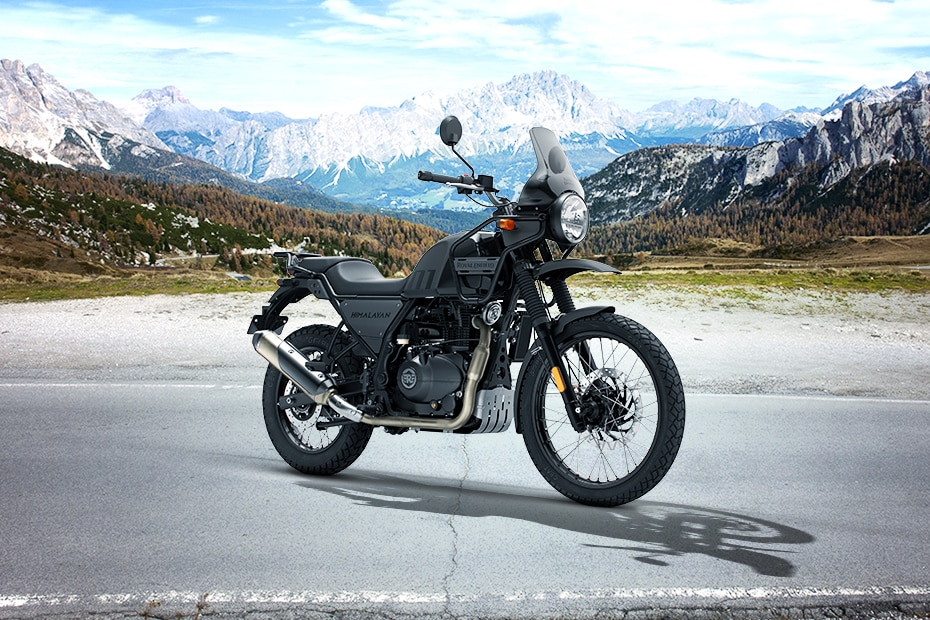

Royal Enfield is the oldest motorcycle manufacturer in continuous production, having been formed in 1901 in England and now built in India. While for many years the mainstay of production was the single-cylinder 350 and 500cc Bullet model, in recent years, the company has expanded its range with the addition of the 650cc parallel twin-engined Interceptor in 2018.
SCRAM 411 VS HIMALAYAN 411At the same time, the 410cc Himalayan 411 'adventure' model was announced, using a 24.5bhp, single overhead camshaft, single-cylinder engine. If basic motorcycling was your thing, then the Himalayan was the bike for you. It might have lost out to the likes of the KTM 390 Adventure in terms of up-to-date technology and components but its simplicity was its strength. Now, Enfield has announced the Scram 411, a stripped back version of the Himalayan, designed more for the urban jungle rather than the actual jungle! Mark Wells, Chief of Design at Royal Enfield, said, "Most scrambler motorcycles focus only on aesthetics and looks. When we began work on the Scram 411, we were determined to create a motorcycle that would be distinct in design and purpose, and bring the best of rough road capability to urban riding.
"With its simple look and design, playful colour ways, accessible riding proposition, the Scram 411 is an ultimate ADV crossover for the urban environment." The engine and running gear remain the same as the Himalayan, as is the Harris-designed frame. The front forks have lost 10mm of travel - down to 190mm from 200mm - but the biggest change comes in the form of a 19-inch front wheel in place of the 21-inch as fitted to the Himalayan, which will give the Scram 411 much better road manners, as befits its intended role.
The basic fairing of the Himalayan has gone, leaving the Scram 411 as naked as the day it was born. A new instrument cluster has been fitted, as has a new single-piece seat which should be a lot more comfortable. With a range of 250 miles from the 12.5-litre gas tank, added comfort is a welcome bonus. The most attractive thing about the Scram 411 will be the price. While no price has been announced for the Scram 411, a Himalayan 411 currently retails for $5,000, which is a quarter of the price of a BMW R1250 GS or, more relevant, $1,500 less than a KTM 390 Adventure. We can't see the Scram 411 being any more expensive than the Himalayan 411, so it could be just the bargain you are looking for, for that urban adventure. It might lack the cachet of the KTM but its rugged simplicity will be a strong attraction for many.
 VS